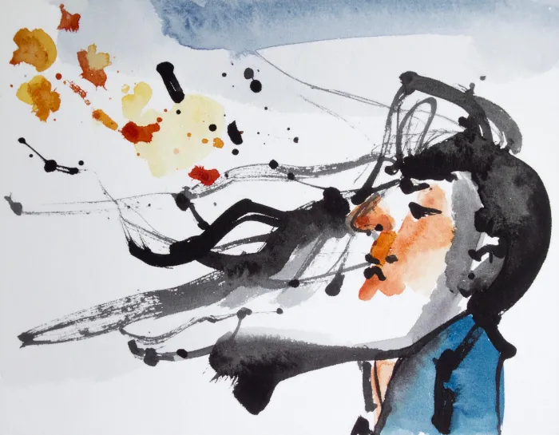
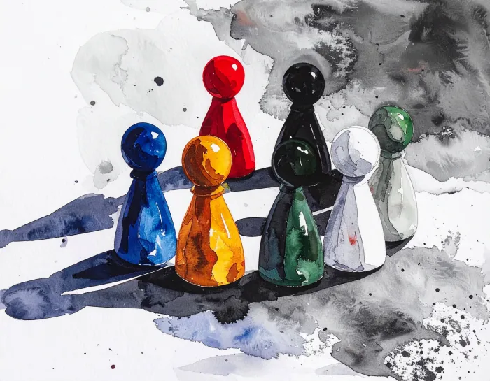
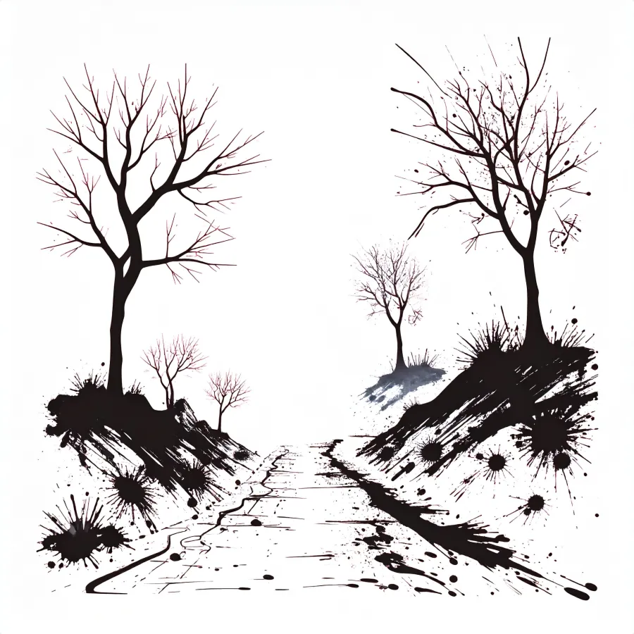
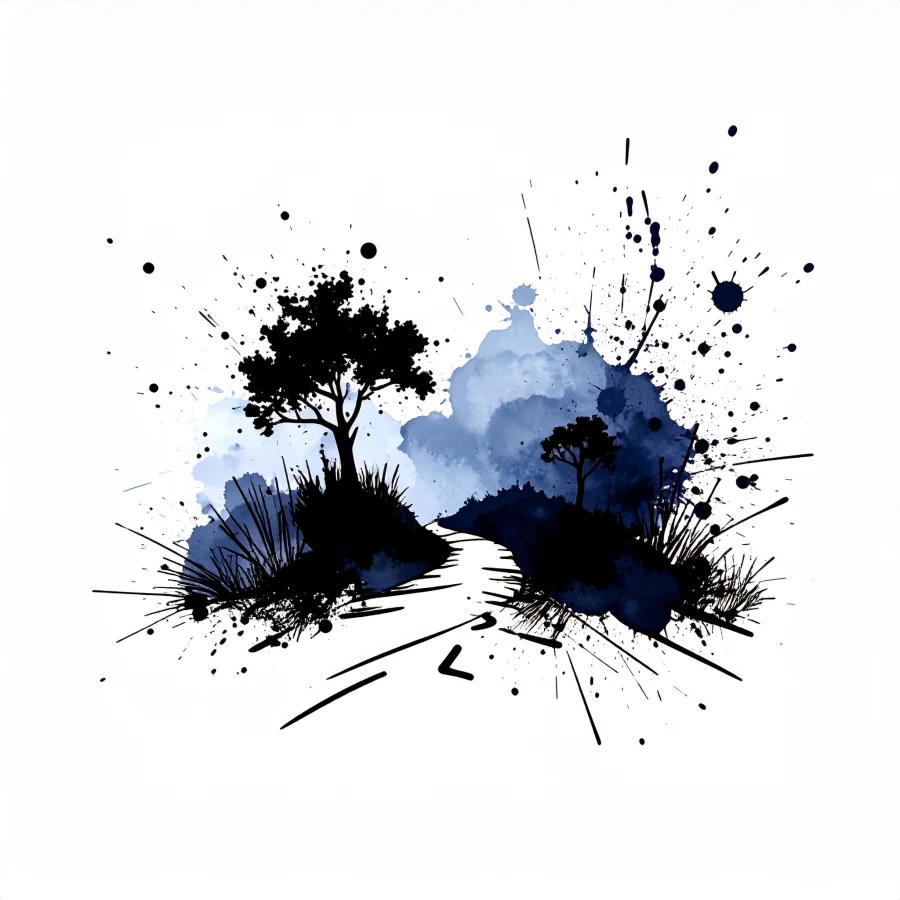

The Digital Version
JOURNEYWAYS is being built as a digital game in parallel with the board game. Same design philosophy, same five card categories, same modular map, same private journal. Different medium, same commitment to identity exploration and collaborative narrative.
The digital version exists to remove barriers, not to replace the table. Players can participate from anywhere; sessions span geographies; there is no camera support so the focus stays on words and stories. Solo and group play, real-time multiplayer, trilingual at launch in English, Spanish, and French.

Wind. Encounter card.

Commune. Group action card.
Development Log
Progress and milestones for the digital version.
Source code at github.com/theagitist/journeyways.
The repository is private during development; access by request for now. It will be made public when the project is released.
In this version
-
Real-time multiplayerLobby, dashboard, and play view show who is present. Collaborative canvas synchronization keeps everyone's view in step.
-
Modular map and the five-color card systemThe same map-tile and card-pile system as the board game, recreated as an interactive canvas. Red Encounters, Green Movement, Blue Reflections, Black Countdown, Purple Group actions.
-
Private journal with sketch previewPer-player journal: write entries, sketch with the canvas tool, browse previous entries with thumbnail previews.
-
Character Origins as PDFPlayers can export their character creation page as a US Letter PDF for printing or archival.
-
Trilingual interfaceEnglish, Spanish, and French at launch. User-created content stays in the language the user wrote it; nothing gets auto-translated.
-
Privacy by designNo camera support. Argon2id password hashing, Cloudflare Turnstile verification, journals scoped per session. All data hosted in Canada.
Recent milestones
-
Multiplayer presenceLobby, JOURNEY view, and dashboard now show who is in the room and who is currently playing.
-
Journal log redesignPer-entry name, compact edit affordance, sketch preview thumbnails on each row.
-
Play-view layout overhaulSite navigation moved into a hamburger inside the journal panel. The canvas now reaches the top of the viewport. The journal panel can be hidden entirely or floated as an overlay.
-
Phone-size advisoryFirst-time-per-session modal warns phone users that the game is best on desktop or tablet. Full mobile responsiveness is on the roadmap.
-
mtime-based cache invalidationStylesheet and script tags carry an mtime-based version query so rebuilds invalidate browser caches automatically.

Misty Trail. Map tile.

Night Way. Map tile.
On the roadmap
-
Mobile responsivenessPhones are advisory for now. Full small-screen support is planned.
-
Quiet beta, then larger sessionsFirst closed beta with a small group, then larger play sessions. No launch campaign; updates here as they happen.
-
Hybrid play (longer-term)A mixed-medium variant that combines physical components, like the player booklet, with digital ones, like the board map.